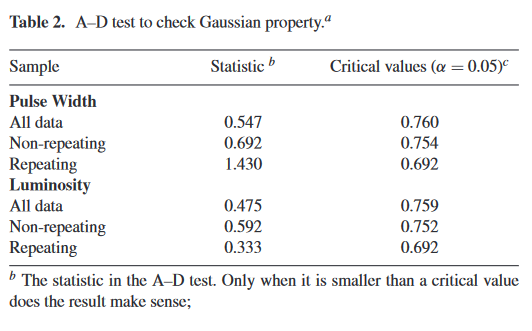

import pandas as pd
import seaborn as sns; sns.set_theme()
import matplotlib.pyplot as plt
import numpy as np
import scipy
Note
📌 Goal: This notebook tries to reproduce the results from https://ui.adsabs.harvard.edu/abs/2021MNRAS.500.3275C/abstract. As stated in the paper, verbatim
We investigate the statistical classifications for the two groups of samples to see if the non-repeating and repeating FRBs have different origins by employing Anderson–Darling (A–D) test and Mann–WhitneyWilcoxon (M–W–W) test
0. Getting The Data
0.1 Source
The data underlying said article are available in the references below:
- Spitler et al. (2016);
- CHIME/FRB Collaboration (2019a);
- Kumar et al. (2019);
- CHIME/FRB Collaboration (2019b);
- Fonseca et al. (2020).
Some data of FRBs are taken from the data base of FRBCAT, available at http://www.frbcat.org/.
0.1.1 Non-Repeaters
However, I have not been able to effectively filter out repeater from the whole population in the FRBCAT Database. Therefore, I joined it with FRBSTATS where the repeater population has been listed on its utc column rounded to the nearest second.
Deprecated
Using the described filters, I have been able to obtain 88 data points. It is close to the papers sample of 80 ~ 913
# Load FRBCAT Catalogue
frbcat = pd.read_csv("../data/raw/external/frbcat_20221227.csv", parse_dates=['utc']).rename(
columns={
'rop_sampling_time': 'sampling_time',
'rop_bandwidth': 'bandwidth_MHz',
'rop_centre_frequency': 'center_freq_MHz'
})
frbcat['utc'] = frbcat['utc'].round('S')
frbcat = frbcat[frbcat['rmp_width'] <= 35]
frbcat.info()<class 'pandas.core.frame.DataFrame'>
Int64Index: 107 entries, 0 to 117
Data columns (total 14 columns):
# Column Non-Null Count Dtype
--- ------ -------------- -----
0 frb_name 107 non-null object
1 utc 107 non-null datetime64[ns]
2 telescope 107 non-null object
3 rop_raj 107 non-null object
4 rop_decj 107 non-null object
5 rop_gl 107 non-null float64
6 rop_gb 107 non-null float64
7 sampling_time 106 non-null float64
8 bandwidth_MHz 107 non-null float64
9 center_freq_MHz 107 non-null float64
10 rmp_dm 107 non-null float64
11 rmp_dm_error 107 non-null float64
12 rmp_width 107 non-null float64
13 rmp_snr 104 non-null float64
dtypes: datetime64[ns](1), float64(9), object(4)
memory usage: 12.5+ KB# Load FRBSTATS catalogue and do appropriate filter
# A separate list is used because FRBCAT uses a different name
frbstats_telescope_names_available_in_frbcat = ['Parkes', 'Arecibo', 'Pushchino', 'FAST', 'DSA', 'CHIME', 'WSRT/Apertif', 'UTMOST', 'VLA', 'GBT', 'ASKAP']
frbstats_float_columns = ['l', 'b', 'frequency', 'dm', 'flux', 'width', 'fluence', 'snr', 'redshift']
repeaters_samples = pd.read_csv('../data/raw/external/FRBSTATS2022-11-23_repeaters.csv', index_col=0)
frbstats = pd.read_csv('../data/raw/external/FRBSTATS2022-11-23_population.csv',
parse_dates=['utc'],
dtype={telescope: float for telescope in frbstats_telescope_names_available_in_frbcat},
na_values=["-"]
)
frbstats['utc'].round('S')
# Label repeaters
frbstats["repeater"] = False
frbstats.loc[frbstats["frb"].isin(repeaters_samples["samples"]),"repeater"] = True
# !! Filter is deprecated
# selected_data = frbstats[
# (frbstats['repeater'] == False) &
# (frbstats["width"] <= 35) &
# (frbstats["telescope"].isin(frbstats_telescope_names_available_in_frbcat)) &
# (frbstats['telescope'] != 'CHIME') &
# (frbstats["utc"].between(frbcat["utc"].min(), frbcat["utc"].max()))
# ]
selected_data = pd.merge(frbcat[['utc', 'sampling_time', 'bandwidth_MHz', 'center_freq_MHz', 'rmp_width']], frbstats[frbstats['repeater'] == False], on='utc')
# Handle NaN values
selected_data.loc[selected_data['width'].isna(), ['width']] = selected_data['rmp_width']
selected_data.loc[selected_data['sampling_time'].isna(), ['sampling_time']] = 0
selected_data.info()<class 'pandas.core.frame.DataFrame'>
Int64Index: 84 entries, 0 to 83
Data columns (total 25 columns):
# Column Non-Null Count Dtype
--- ------ -------------- -----
0 utc 84 non-null datetime64[ns]
1 sampling_time 84 non-null float64
2 bandwidth_MHz 84 non-null float64
3 center_freq_MHz 84 non-null float64
4 rmp_width 84 non-null float64
5 frb 84 non-null object
6 mjd 84 non-null float64
7 telescope 84 non-null object
8 ra 84 non-null object
9 dec 84 non-null object
10 l 84 non-null float64
11 b 84 non-null float64
12 frequency 84 non-null float64
13 dm 84 non-null float64
14 flux 77 non-null float64
15 width 84 non-null float64
16 fluence 81 non-null float64
17 snr 82 non-null float64
18 reference 84 non-null object
19 redshift 83 non-null float64
20 redshift_measured 6 non-null float64
21 ra_error 83 non-null float64
22 dec_error 83 non-null float64
23 dm_error 82 non-null float64
24 repeater 84 non-null bool
dtypes: bool(1), datetime64[ns](1), float64(18), object(5)
memory usage: 18.5+ KBIn order the accept that both these data describe the same sample, I plotted the overlap between our selected data and the original FRBCAT data.
frbcat_ = frbcat.rename(columns={'frb_name':'frb','rop_raj': 'ra', 'rop_decj': 'dec', 'rop_gb': 'b', 'rop_gl': 'l', 'rmp_width': 'width', 'rmp_dm': 'dm', 'rmp_snr': 'snr'})
frbcat_.loc[:, ['source']] = 'frbcat'
frbstats_ = selected_data[['frb', 'utc', 'telescope', 'ra', 'dec', 'l', 'b', 'dm', 'width', 'snr']]
frbstats_.loc[:, ['source']] = 'frbstats'
frbpopulation_merged = pd.concat([frbcat_, frbstats_])
sns.relplot(data=frbpopulation_merged, x='utc', y='width', style='source', hue='telescope')<seaborn.axisgrid.FacetGrid at 0x29d3b58f9a0>0.1.2 Repeaters
Data on repeaters are easy to obtain. The authors are kind enough to provide table on all 20 samples used in the study.
xianghan = pd.read_csv('../data/raw/external/XiangHan2020_ensemble-repeaters.csv')| No. | Sources | Observed width (ms) | Intrinsic width (ms) | Flux density (Jy) | Fluence (Jy ms) | Distance (Gpc) | Refs. | |
|---|---|---|---|---|---|---|---|---|
| 0 | 1 | FRB121102 | 4.82 | 4.78 | 0.25 | 0.372 | 1.61 | (1) |
| 1 | 2 | FRB180814.J0422+73 | 22.57 | 23.43 | nan | 22.57 | 0.39 | (2)(3) |
| 2 | 3 | FRB171019 | 4.62 | 4.08 | nan | 101.54 | 1.89 | (4) |
| 3 | 4 | FRB180916.J0158+65 | 5.27 | 5.16 | 2.08 | 1.62 | 0.58 | (5) |
| 4 | 5 | FRB181030.J1054+73 | 1.01 | 0.1 | 3.15 | 4.75 | 0.24 | (5) |
| 5 | 6 | FRB181128.J0456+63 | 5.9 | 5.8 | 0.4 | 3.45 | 1.14 | (5) |
| 6 | 7 | FRB181119.J12+65 | 3.49 | 3.33 | 0.43 | 1.77 | 1.42 | (5) |
| 7 | 8 | FRB190116.J1249+27 | 2.75 | 2.53 | 0.35 | 1.8 | 1.9 | (5) |
| 8 | 9 | FRB181017.J1705+68 | 16.8 | 16.73 | 0.4 | 8.5 | 6.97 | (5) |
| 9 | 10 | FRB190209.J0937+77 | 6.55 | 6.46 | 0.5 | 1.25 | 1.66 | (5) |
| 10 | 11 | FRB190222.J2052+69 | 2.71 | 2.48 | 1.65 | 5.45 | 1.64 | (5) |
| 11 | 12 | FRB190208.J1855+46 | 1.11 | 0.14 | 0.5 | 1.7 | 2.35 | (6) |
| 12 | 13 | FRB180908.J1232+74 | 3.83 | 3.7 | 2.9 | 0.5 | 0.62 | (6) |
| 13 | 14 | FRB190604.J1435+53 | 2.1 | 1.78 | 0.75 | 8.3 | 2.42 | (6) |
| 14 | 15 | FRB190212.J18+81 | 3.1 | 2.93 | 0.75 | 2.75 | 1.05 | (6) |
| 15 | 16 | FRB190303.J1353+48 | 3.2 | 3.04 | 0.47 | 2.67 | 0.77 | (6) |
| 16 | 17 | FRB190417.J1939+59 | 4.5 | 4.2 | 0.53 | 3.1 | 7.4 | (6) |
| 17 | 18 | FRB190117.J2207+17 | 2.74 | 2.53 | 1 | 6.36 | 1.49 | (6) |
| 18 | 19 | FRB190213.J02+20 | 7 | 6.9 | 0.5 | 1.8 | 2.91 | (6) |
| 19 | 20 | FRB190907.J08+46 | 2.18 | 1.92 | 0.3 | 2.03 | 1.07 | (6) |
1.0 Preprocessing
1.1 Parameters
We first process our data to uncover these parameters:
- Pulse width
- Radio Luminosity
1.1.1 Pulse Width
Since the pulse width in the FRBCAT is the observed width, which is easily affected by dispersion, to study the pulse width more accurately, we need to introduce the intrinsic width that is estimated by equation: \[ t_i = \sqrt{t^2_\text{obs} − t^2_\text{DM} − t^2_s} \] In the above formula, \(t_i(t_\text{obs})\) is the intrinsic width (observed width), with \(t_s\) being the sampling time that depends on the instrument, and \(t_\text{DM}\) is the dispersion smearing time-scale as calculated in the following: \[ t_\text{DM} = 8.3 \times 10^{−3} \text{DM}\frac{\Delta ν_\text{MHz}}{ν^3_\text{GHz}} ms, \] where DM is the dispersion measure, \(\Delta ν_\text{MHz}\) is the channel bandwidth in the unit of MHz, and \(ν_\text{GHz}\) is the central frequency in the unit of GHz. Therefore, the pulse width in the following text represents the intrinsic width.
def dispersion_smearing_timescale(dispersion_measure, bandwidth_MHz, center_freq_GHz) -> float:
return 8.3e-6 * dispersion_measure * (bandwidth_MHz / center_freq_GHz**3)
def instrinsic_width(observed_width, sampling_time, dispersion_measure, bandwidth_MHz, center_freq_GHz) -> float:
return np.sqrt(abs((observed_width**2 - dispersion_smearing_timescale(dispersion_measure, bandwidth_MHz, center_freq_GHz)**2 - sampling_time**2)))selected_data.loc[:, 'intrinsic_width_ms'] = instrinsic_width(
selected_data['width'],
selected_data['sampling_time'],
selected_data['dm'],
selected_data['bandwidth_MHz'],
selected_data['center_freq_MHz']*0.001)frbcat.loc[:, 'intrinsic_width_ms'] = instrinsic_width(
frbcat['rmp_width'],
frbcat['sampling_time'],
frbcat['rmp_dm'],
frbcat['bandwidth_MHz'],
frbcat['center_freq_MHz']*0.001
)1.1.2 Radio Luminosity
Radio luminosity is estimated using the formula below: \[ L_\text{radio} \approx SD^2 \] where \(S\) is the flux density and \(D\) is the luminosity distance
Jy_to_erg_s = 1e-23 # erg s-1 cm-2 Hz-1
Gpc_to_m = 3.0857e16 * 1e6 # m
m_to_cm = 100 #cm
def radio_luminosity_approx(flux_density: float, luminosity_distance: float) -> float:
"""Approximation of radio luminosity
Args:
flux_density (float): flux density in Jy
luminosity_distance (float): Luminosity distance in Gpc
Returns:
float: radio luminosity in erg/s /Hz
"""
flux_density_erg_s = flux_density*Jy_to_erg_s
luminosity_distance_cm = luminosity_distance*Gpc_to_m*m_to_cm
return flux_density_erg_s*(luminosity_distance_cm**2)The formula for luminosity distance in this notebook is taken from the python implementation of
c_km_s = 299792.458 # velocity of light in km/sec
H_0_km_s_Mpc: float = 69.6 # km s^-1 Mpc^-1
def luminosity_distance(z: float, Omega_matter: float = 0.268, Omega_vacuum:float = 0.714, H_0_km_s_Mpc: float = 69.6) -> float:
"""Calculate luminosity distance at redshift based on the python's implementation of [CosmoCalc](https://www.astro.ucla.edu/~wright/CosmoCalc.html)
Args:
z (float): redshift
Omega_matter (float, optional): Total matter density. Defaults to 0.268.
Omega_vacuum (float, optional): Cosmological Constant. Defaults to 0.714.
H_0_km_s_Mpc (float, optional): Hubbles constant in km s^-1 Mpc^-1. Defaults to 69.6.
Returns:
float: Luminosity distance in Mpc
"""
h = H_0_km_s_Mpc/100.
Omega_radiation = 4.165E-5/(h*h) # includes 3 massless neutrino species, T0 = 2.72528
Omega_curvature = 1-Omega_matter-Omega_radiation-Omega_vacuum
z = z[0]
az = 1.0/(1+1.0*z)
DTT = 0.0
DCMR = 0.0
n=1000 # number of points in integrals
# do integral over a=1/(1+z) from az to 1 in n steps, midpoint rule
for i in range(n):
a = az+(1-az)*(i+0.5)/n
adot = np.sqrt(Omega_curvature+(Omega_matter/a)+(Omega_radiation/(a*a))+(Omega_vacuum*a*a))
DTT = DTT + 1./adot
DCMR = DCMR + 1./(a*adot)
DTT = (1.-az)*DTT/n
DCMR = (1.-az)*DCMR/n
ratio = 1.00
x = np.sqrt(abs(Omega_curvature))*DCMR
if x > 0.1:
if Omega_curvature > 0:
ratio = 0.5*(np.exp(x)-np.exp(-x))/x
else:
ratio = np.sin(x)/x
else:
y = x*x
if Omega_curvature < 0: y = -y
ratio = 1. + y/6. + y*y/120.
DCMT = ratio*DCMR
DA = az*DCMT
DL = DA/(az*az)
DL_Mpc = (c_km_s/H_0_km_s_Mpc)*DL
return DL_Mpcdef redshift_from_distance(distance):
return distance*H_0_km_s_Mpc/c_km_sselected_data['radio_luminosity'] = radio_luminosity_approx(
selected_data['flux'],
luminosity_distance(z=selected_data['redshift'])*1000
)
xianghan['radio_luminosity'] = radio_luminosity_approx(
xianghan['Flux density (Jy)'],
luminosity_distance(
z=redshift_from_distance(xianghan['Distance (Gpc)'])
)*1000
)selected_data['radio_luminosity'].describe()count 7.700000e+01
mean 1.661798e+39
std 2.601721e+39
min 3.006860e+36
25% 4.780137e+37
50% 5.396929e+38
75% 2.081672e+39
max 1.137210e+40
Name: radio_luminosity, dtype: float64xianghan['radio_luminosity'].describe()count 1.800000e+01
mean 2.319993e+32
std 2.213047e+32
min 6.173843e+31
25% 1.006336e+32
50% 1.234769e+32
75% 2.315191e+32
max 7.779042e+32
Name: radio_luminosity, dtype: float64We can see that the range is not quite the same as stated in the paper:
- Repeaters: ∼1039 to ∼1042 erg s−1
- Non-repeaters: ∼1038 to ∼1044 erg s−1
which possibly means that there are parts of the calculations that I am missing.
2.0 Statistical Test
2.1 Anderson–Darling Test
An Anderson–Darling test (A-D test) is used to measure the likelihood that a sample follows a certain distribution.
from scipy.stats import anderson
anderson_width_all = anderson([*xianghan['Intrinsic width (ms)'], *selected_data['intrinsic_width_ms'].dropna()], dist='norm')
anderson_width_xianghan = anderson(xianghan['Intrinsic width (ms)'], dist='norm')
anderson_width_nonrepeater = anderson(selected_data['intrinsic_width_ms'].dropna(), dist='norm')| Sample | Statistic | Critical values (\(\alpha\) = 0.05) | |
|---|---|---|---|
| 0 | All data | 12.9237 | 0.76 |
| 1 | Non-repeating | 11.0479 | 0.754 |
| 2 | Repeating | 2.38607 | 0.692 |
anderson_lumo_all = anderson([*xianghan['radio_luminosity'].dropna(), *selected_data['radio_luminosity'].dropna()], dist='norm')
anderson_lumo_xianghan = anderson(xianghan['radio_luminosity'].dropna(), dist='norm')
anderson_lumo_nonrepeater = anderson(selected_data['radio_luminosity'].dropna(), dist='norm')| Sample | Statistic | Critical values (\(\alpha\) = 0.05) | |
|---|---|---|---|
| 0 | All data | 13.3245 | 0.757 |
| 1 | Non-repeating | 9.08615 | 0.751 |
| 2 | Repeating | 2.24584 | 0.687 |
Clearly, the results are different from what is stated from the paper.

Even for the exact same data on the variable xianghan (Repeating) and the exact copy of the Intrinsic width (ms) parameters, the values are different. I have been trying to figure that out for about 3 weeks but no avail. Here are the things that I have tried:
- A custom Anderson-Darling function which yielded higher values.
- Excluding some values (No. 2, 12, 20) which yielded close enough statistic (1.43080) but I doubt that is the reason.
I decided to stop trying and move on to something else.
Footnotes
https://www.herta-experiment.org/frbstats/↩︎
Even with the described filters, the CHIME/FRB telescope dominates the dataset making up >500 data points while it is not that prominent in FBRCAT and also the total data points is less than 100↩︎
The paper mentioned both numbers. The lower limit of 80 is mentioned in the conclusion but the upper limit of 91 is mentioned in the abstract. So I took it as a range instead.↩︎